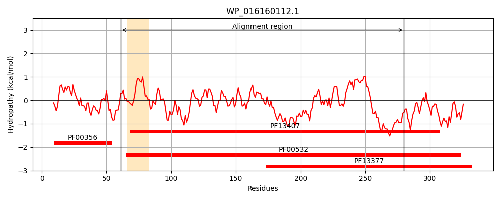
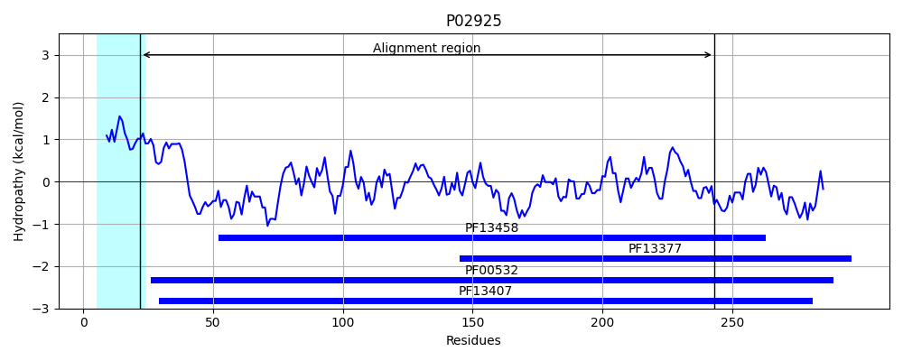
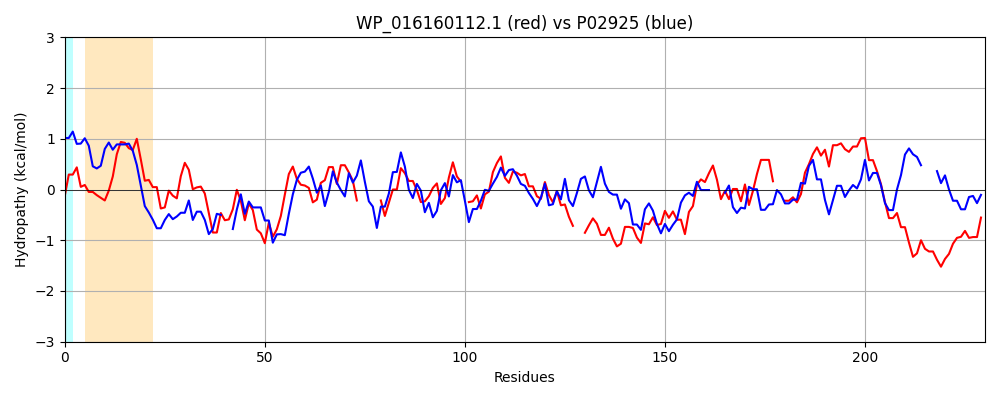

Hit Accession: P02925
Hit TCID: 3.A.1.2.1
Hit Description: gnl|BL_ORD_ID|8234 gnl|TC-DB|P02925|3.A.1.2.1 D-ribose-binding periplasmic protein precursor - Escherichia coli.
Mach Len: 230
e:0.000000
Query TMS Count : 1
Hit TMS Count: 1
TMS-Overlap Score: 0.000000
Predicted Substrates:CHEBI:10410;beta-D-ribopyranose
BLAST Alignment:
Score: 162 , Bit scores: 67 bits, E-value: 1.2e-12, Alignment length: 230, Percentage identity: 27
Query: 61 NRQRSHLIGVIVSRISDPFRSALLDALLNEIQRQGFQALVSEIHSEQDLAHTLRRFTQFRVSGVIVTSGQPPEA-----LVNECVQQHIPVVGINRQPTI-PGVDYVCSDNIAGAELAADQLLRSGCR--RFGWLNHSPSTWAGRMRGEAFSRALQARGVDVERNLAILACPEEGYTG--GFQAAALADEALEGIFCANAQIACGFLDGMRQRGKQAPEDYQLIGFDNTP 280
N I ++VS +++PF +L D E + G+ +V + S+ + A L V G + P ++ V Q +IPV+ ++RQ T V ++ SDN+ G ++A D + + + L T A R RGE F +A+ A +V LA + G Q A ++ +F N ++A G L ++ GK D ++GFD TP
Sbjct: 22 NAMAKDTIALVVSTLNNPFFVSLKDGAQKEADKLGYNLVV--LDSQNNPAKELANVQDLTVRGTKILLINPTDSDAVGNAVKMANQANIPVITLDRQATKGEVVSHIASDNVLGGKIAGDYIAKKAGEGAKVIELQGIAGTSAARERGEGFQQAVAAHKFNV---LASQPADFDRIKGLNVMQNLLTAHPDVQAVFAQNDEMALGALRALQTAGK---SDVMVVGFDGTP 243 | Protein Hydropathy Plots: |
|---|
|  |  |
Pairwise Alignment-Hydropathy Plot:
|
|---|
|  |